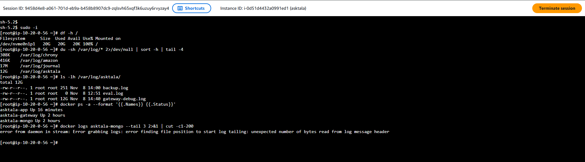
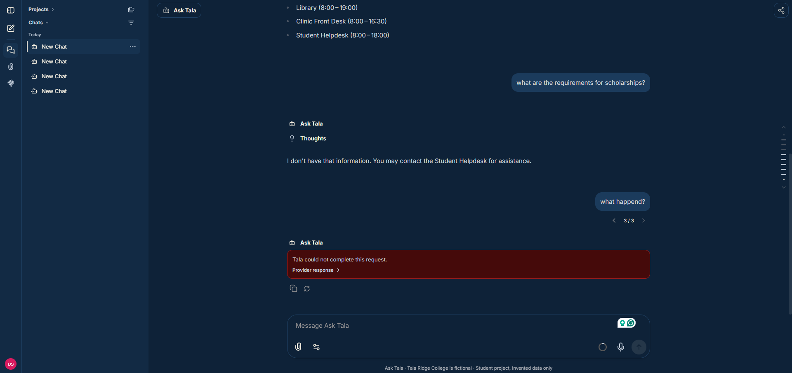
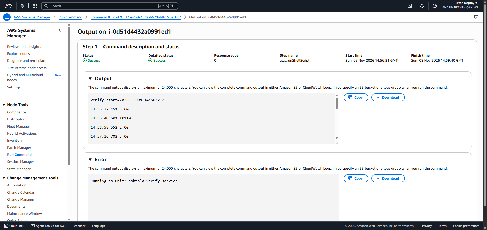

Automation and the incident
Two automations
| Job | Schedule | What it does |
|---|---|---|
| Database backup | Every hour, by a systemd timer | Dumps MongoDB to S3 and publishes a success metric that an alarm watches. |
| Test questions | Every 3 hours, by a systemd timer | Asks 12 labelled questions, stores the result in S3, publishes a pass rate and emails it to me. |
E-14. Timer runs from CloudWatch, checked 6:30 PM Manila on 10 November 2026 (times in UTC). Runs started by hand are labelled manual and are not counted.
backup 46 runs trigger=systemd-timer status=ok, none failed
first 2026-11-08T13:00:19Z last 2026-11-10T10:00:06Z
eval 15 runs trigger=systemd-timer
2026-11-08T15:20 12/12 2026-11-09T12:20 12/12
2026-11-08T18:20 11/12 * 2026-11-09T15:20 12/12
2026-11-08T21:20 12/12 2026-11-09T18:20 12/12
2026-11-09T00:20 12/12 2026-11-09T21:20 12/12
2026-11-09T03:20 12/12 2026-11-10T00:20 12/12
2026-11-09T06:20 12/12 2026-11-10T03:20 12/12
2026-11-09T09:20 12/12 2026-11-10T06:20 12/12
2026-11-10T09:20 12/12
* q12 returned "ERROR: HTTPError": the model request failed.
Both jobs ran many times without anyone starting them, well beyond the two runs the brief asks for. All alarms were OK when checked at 6:30 PM Manila on 10 November.
The code for both is in the repository under ops/, and the README explains how to deploy it.
Real deployment problems
Before the planned fault, five real problems appeared while deploying, each fixed and committed:
- The server's older Docker build tool stopped the first start.
- The gateway did not know its AWS region, so all test answers failed.
- The chosen model was not available to my Groq key.
- Manual test runs were incorrectly labelled as scheduled, which would have made evidence misleading. That label was fixed, and the mislabelled run at 12:31:30 UTC is not counted.
- The theme colours were in the wrong format.
The fault: a full disk
I caused this fault on purpose, as the brief allows. Ask Tala is not used by real people.
| Manila time, 8 Nov 2026 | Event |
|---|---|
| 10:36:32 PM | Fault started: a script writes a runaway log. Disk at 45%. |
| 10:40:41 PM | Last successful answer recorded by the gateway. |
| 10:40:43 PM | MongoDB logs a fatal segmentation fault. |
| 10:41:18 PM | The web app logs ENOSPC (no space left) and cannot find the database. |
| 10:42:02 PM | Alarm fires and the email arrives. Time to detect: 5 min 30 s. |
| 10:44 PM | I see Ask Tala failing. |
| about 10:48 PM | Disk cleared; alarm returns to OK at 10:48:02. The app still fails. |
| 10:51:10 PM | Database and app restarted, health check passes. Time to fix: 9 min 8 s from the alarm. |
| 10:52:08 PM | Log rotation installed. |


Log excerpts from CloudWatch, 8 November 2026 (UTC):
/asktala/mongodb 14:40:43 "s":"F", "c":"CONTROL", "msg":"Writing fatal message", "attr":{"message":"Got signal: 11 (Segmentation fault)."}
/asktala/librechat 14:41:17 error: ErrorController => error getaddrinfo ENOTFOUND mongodb
/asktala/librechat 14:41:18 error: There was an uncaught error: ENOSPC: no space left on device, write
Root cause
A runaway log with no size limit grew to 12 GB and filled the disk. MongoDB crashed at 10:40:43 PM, within seconds of the disk becoming full, which points to the full disk as the cause, though the log line itself does not state it. With the database down, every chat failed.
Clearing the disk was not enough, because MongoDB stayed stopped. docker ps misleadingly still showed it as "Up 2 hours", while docker inspect showed running=false. The fix was to clear the disk, then restart the database and the app.
Prevention and proof
I added log rotation with a 200 MB limit, checked every minute. I then ran the same runaway log with the rotation in place.

14:56:22 45% 3.6M 14:56:40 50% 1011M 14:56:58 55% 2.0G 14:57:16 70% 5.0G 14:57:34 75% 6.0G 14:57:52 85% 8.0G 14:58:10 62% 3.5G 14:58:28 70% 5.0G 14:58:46 57% 2.5G 14:59:04 75% 6.0G 14:59:22 85% 8.0G
Longer test, 17:06:26 to 17:14:28 UTC on 8 November 2026 (1:06 to 1:14 AM Manila, 9 November). The 3-minute test above was not conclusive by itself, so I ran the same runaway log for 8 minutes, sampling every 12 seconds with a safety stop at 92%. The safety stop never triggered. Disk use stayed between 45% and 85% by rounded readings, no new disk alarm fired, and MongoDB stayed running.
17:06:26 45% 1.6M 17:07:51 85% 8.0G 17:08:03 61% 3.3G 17:09:15 85% 8.0G 17:09:27 59% 2.9G 17:10:39 85% 8.1G 17:10:51 59% 2.9G 17:11:51 75% 6.1G 17:12:03 58% 2.6G 17:13:03 75% 6.1G 17:13:15 58% 2.6G 17:14:28 50% 1.1G max=85 end=2026-11-08T17:14:28Z running=true
The first time, with no rotation, the same log filled the disk in about 4 minutes and stopped the database. This time it ran for 8 minutes and did not.
Rotation limits a runaway log at this speed, but a much faster one could still beat a one-minute check, and it does not restart a crashed database. I list both as remaining risks.
Runbook: disk full
Owner: Andrik Brenth E. Canlas · Last tested: 8 November 2026 · Takes: about 10 minutes · Ask: Andrik
- What this is for. Recovering Ask Tala when the server disk fills up.
- How you know you need it. The
asktala-disk-above-85alarm email, or chats failing with "Tala could not complete this request". Check withdf -h /. - What it affects. Everyone: chats fail until the database is running again.
- How to do it. Open Session Manager to the
asktalainstance and runsudo -i.- Find what is large:
du -sh /var/log/* | sort -h | tail -4, and identify the file responsible. - For the exercise's log:
/opt/asktala/ops/fault-disk.sh clean. You should see the disk near 45%. - Check the database:
docker inspect -f '{{.State.Running}}' asktala-mongo. Iffalse, rundocker restart asktala-mongo, wait 15 seconds, thendocker restart asktala-app. - Confirm:
curl -s -o /dev/null -w '%{http_code}' localhost:3080/healthshould print200.
- Find what is large:
- How to check it worked.
- [ ] The disk is below 85%.
- [ ] "Where is the Registrar's office?" gets Molave Hall, Room 101.
- [ ] No new alarms for 10 minutes.
- How to undo it. Deleted logs cannot be restored. If the database is damaged, use
/opt/asktala/ops/restore.sh. - Gotchas. A full disk blocks Run Command, so keep a Session Manager window open during any fault test.
docker pscan show a stopped container as "Up".docker logscan fail on a full disk, so use CloudWatch. - Change history. 8 November 2026: created after the fault test; log rotation added.